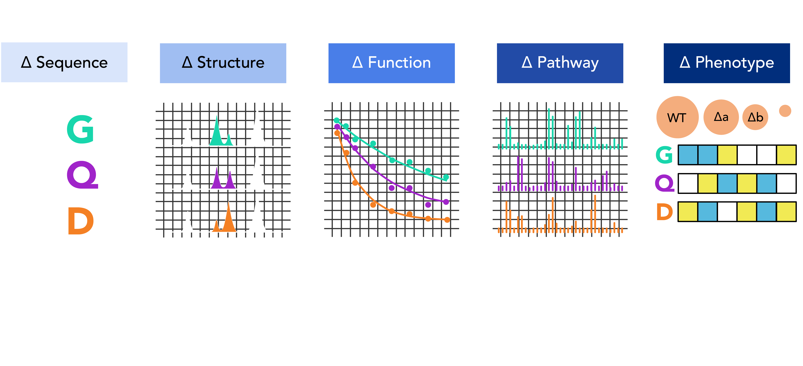
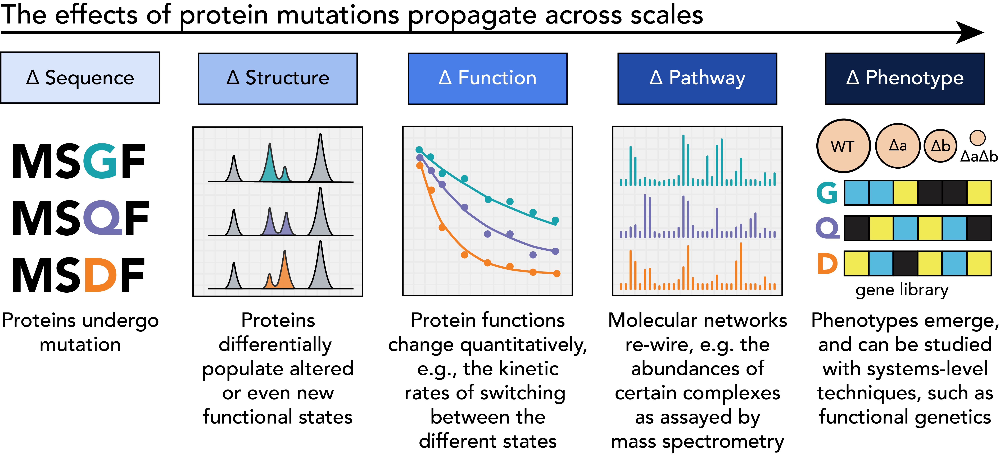

Research Interests¶
Check out our recent preprint!
Out now on bioRxiv: we report new sites of allosteric regulation in a GTPase, found using a new deep mutational scanning assay for essential genes.


I’m interested in how changes to protein structure operate at many scales to impact cellular functions, and how we might harness this inherent sensitivity when we engineer proteins.
A single point mutation will alter local chemistries and rearrange interactions with other molecules in the protein’s network. But these seemingly small changes often propagate to affect other processes because cellular networks are highly interconnected. This propagation is a key component of genetic diseases like cancer and many neurodegenerative diseases, in which single mutations can reshape the entire body. Understanding this propagation allows us to better design the most effective and least harmful treatments.
 {kind=link}
{kind=link}
What I’m working on now:¶
GTPases are small proteins that act as “switches”, where they have an ON state and an OFF state determined by binding a GTP or GDP molecule. They control signaling by interacting with other proteins and activating cellular processes in a state-dependent manner. I currently study:
How point mutations in one GTPase, Gsp1 (the yeast homolog of human Ran), can differentially and independently impact various processes in the cell.
How the cell might control these same processes on purpose by employing proteins that bind to Gsp1, making the same structural changes as the point mutations did.
Whether we can discover the molecular mechanisms of allostery in Gsp1 using high-throughput mutational scans
Future directions - what can this framework do for us moving forward?¶
Gsp1 is a superb example of protein multifunctionality: a broadly-defined but essential concept for understanding cells, which often use a single multi-functional protein to coordinate distinct downstream functions in a selective fashion, regulated by diverse mechanisms such as post-translational modification, alternative splicing, or changes in localization. Co-ordinating dissimilar biological processes by operating at the intersection of multiple metabolic or signaling pathways is a promising feature for synthetic biologists seeking to design new living systems.
However, protein engineers typically design or evolve new proteins by optimizing just one function at a time, and state-of-the-art examples of synthetic protein networks tend to consist of simpler linear motifs and are in fact optimized for insulation from other pathways. In contrast, naturally occurring multi-functional proteins are optimized through natural evolution which obligately selects on all of their functions simultaneously. I am interested in developing news strategies for characterizing and engineering proteins with multiple reliable functions that regulate distinct pathways. Please reach out if you’re interested in similar problems!
What I’ve worked on in the past:¶
My previous research includes work on engineered growth factors for therapeutic applications in Jennifer Cochran’s lab. Growth factors and their receptors on the cell surface tell the cell when to grow, as well as how much and how fast. This makes them key therapeutic targets to activate for wound healing, and to suppress in cancer. In the Cochran Lab, I studied how cell types responded differently to engineered therapeutic growth factors because of differences in their cell surface profiles, resulting in different internalization behaviors. Our team then designed specific mutations that were capable of inducing each cellular response, showing how engineering can tailor therapeutic proteins to overcome biological obstacles like internalization.